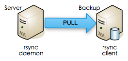
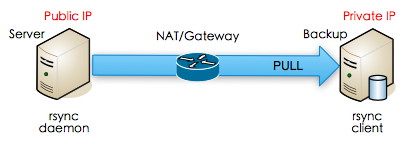
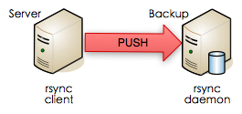
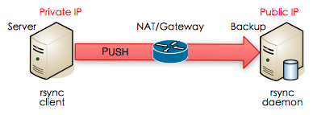

也紀念我們永遠的朋友 李士傑先生（Shih-Chieh Ilya Li）。
淺嚐 rsync
※ 前言
備份規劃是資訊系統建置中佔有相當大比重的一環，往往也是資訊人員最不敢掉以輕心的重要項目！相信從事資訊人員的朋友都知道，備份是令人又愛又恨的工作內容。愛的是只要規劃得宜，就可以高枕無憂，輕輕鬆鬆完成備份；恨的是規劃不當，三天兩頭就給你出狀況，令人頭痛萬分啊！本文所介紹的 rsync，是非常好用的備份工具，其簡便的操作加上強大的功能，廣受喜愛與被採用。最重要的是它是免費的開放源碼工具！相信可以成為您在挑選備份工具的選擇之一。
※ 關於 rsync
rsync 採用 GPL 授權，是 www.samba.org 下的專案之一，目前由 Wayne Davison 維護。它原本是被發展來取代 rcp 的一個工具，採用所謂的「rsync 演算法」，提供檔案在本地端或遠端電腦間快速同步的功能，而且只傳送異動的部份，而非整份都傳送。這提升了檔案同步的效率，進而達到快速同步遠端檔案的目的。
因為 rsync 具備了差異性快速遠端同步的特性，並可完整保存所有的檔案資訊、目錄結構、檔案權限等資訊，更支援了匿名同步功能及多種傳輸方式 (rsh, ssh, socket)，因此 rsync 常被採用做為備份 (backup) 或鏡象 (mirror) 的工具。
除此之外，rsync 的安裝相當簡便，不需要特定權限即可安裝，且支援多種作業系統。這讓 rsync 更容易佈署至各種備份計劃之中。
※ 佈署架構
rsync 採用主從式架構，在應用上可分為 PUSH 及 PULL 兩種主要模式，以因應不同的環境因素而達到佈署的目的。
PULL 模式
在同一網段的環境下，由備份主機向伺服器進行同步並將資料備份過來以完成備份工作。這種模式是最被普遍採用的佈署方式。

如上圖所示，由備份主機啟動備份工作，向被備份端要求備份。可將備份時的負載大部份由備份主機承受。當然，PULL 模式也支援跨網段或遠端進行同步備份工作，如下圖：

PUSH 模式

PUSH 模式的執行方式剛好和 PULL 模式恰恰相反。如上圖所示，在同一網段的環境下，由伺服器主動發出同步要求並將資料同步至備份主機上以完成備份的工作。
在實務上，這種模式通常被採用於較特殊的環境下，例如：伺服器被佈署在防火牆內且無法由外部連入。因此，必須改由伺服器主動將資料送至備份主機上。（如下圖）

這並不表示 PUSH 模式只能用在特定情況下，只是在一般的情況下用 PULL 模式會比 PUSH 模式來得有效率且較不影響伺服器的執行效能。
※ 實際操作
在認識了 rsync 的基本佈署概念後，我們不妨來實際演練一下，讓讀者有更深刻的體會。
本篇文章採用典型的 PULL 模式做為示範佈署架構。因此，我們需要在伺服器上安裝並設定 rsync 的 daemon (server)，而備份主機上則只需安裝及設定 rsync 的 client 即可。詳述如下：
- 檔案傳輸伺服器（被備份對象）
- 備份主機（執行備份者)
- 作業系統均為 GNU Debian/Linux 5
- 在同一網路區段下 (192.168.20/24)
安裝 rsync
rsync 的安裝方法在不同的作業系統上略有不同，但其使用方式卻無二致，故在此略過不同版本的安裝說明，請讀者自行參考所使用系統的套件管理方式來進行安裝。
由於 Debian 的套件管理系統相當的方便、易用，且會自動處理套件的相依性，因此只須執行下述指令即可完成 rsync 的安裝。
# apt-get install rsync
設定 rsync
伺服器
在安裝完成 rsync 後，請編輯 /etc/rsyncd.conf 並修改對應設定。基本上，需要注意的是自行定義的部份，請讀者參考下述設定內容並改成符合您需求的設定值。
# sample rsyncd.conf configuration file
# GLOBAL OPTIONS
#motd file=/etc/motd
#log file=/var/log/rsyncd
# for pid file, do not use /var/run/rsync.pid if
# you are going to run rsync out of the init.d script.
pid file=/var/run/rsyncd.pid
#syslog facility=daemon
#socket options=# MODULE OPTIONS
[ftp]
comment = FTP archive
path = /home/ftp
use chroot = no
# max connections=2
lock file = /var/lock/rsyncd
# the default for read only is yes...
read only = yes
list = yes
# uid = nobody
# gid = nogroup
uid = root
gid = root
# exclude =
# exclude from =
# include =
# include from =
# auth users = backup
# secrets file = /etc/rsyncd.secrets
strict modes = yes
# hosts allow =
# hosts deny =
ignore errors = no
ignore nonreadable = yes
transfer logging = no
# log format = timeout = 600
refuse options = checksum dry-run
dont compress = *.gz *.tgz *.zip *.z *.rpm *.deb *.iso *.bz2 *.tbz修改後，請存檔離開。
請注意！rsync 預設為允許匿名登入進行同步。如果要取消匿名登入的話，讀者可以設定下述項目並指定使用者及其密碼。
auth users = backup
secrets file = /etc/rsyncd.secrets
並在 /etc 建立 rsyncd.secrets 檔案，其格式如下：account:password
完成後，啟動 rsyncd 即可。# /etc/init.d/rsyncd start
若有變更任何設定，也請重新啟動 rsyncd。# /etc/init.d/rsyncd restart
備份主機
備份主機上完成 rsync 安裝後，要做的動作就很簡單了！只需要在系統中加入 cron job，指定時間執行備份指令即可。
30 0,12 * * * rsync -avHS --delete This e-mail address is being protected from spambots. You need JavaScript enabled to view it .2::ftp srv/storage 2>&1 > /dev/null/
相關參數如下：
- -a：歸檔模式，相當於-rlptgoD（但不含-H, -A, -X）
- -v：顯示執行記錄
- -H：保留檔案的連結 (hard link)
- -S：採有效率方式處理較鬆散的檔案
- -delete：從備份目的資料夾中刪除多餘或已不存在的檔案
詳細參數請參考 rsync 的 man page 或直接在網路上查詢即可獲得詳盡的說明，限於篇幅，本文不再贅述。
進階使用
如果讀者所採用的伺服器俱備 sshd 的服務，則可以用更簡單的方式來完成備份工作。
由於 rsync 本身支援 rsh、ssh 及 socket 等方式進行連線。因此，只要在伺服器上有提供 ssh 連線服務（通常是 UNIX-like 作業系統），便不需要安裝 rsync daemon，直接透過 ssh 連線及現有使用者帳號（當然可以另外建立給備份專用的帳號更好）即可完成備份設定。
首先，在備份主機上產生一組認證金鑰，其目的在做為伺服器上使用者認證之用。
# cd /.ssh
# ssh-keygen -t rsa -b 2048
這樣會在使用者家目錄下的 .ssh 資料夾中產生一 id rsa.pub 的認證金鑰。然後，將該金鑰檔案傳送至伺服器上的使用者帳號目錄下的 .ssh 資料夾中，並更名為 authorized keys2。請確認其存取權限為該使用者可讀、可寫，或者執行下述指令來設定檔案存取權限。
# chmod 600 /.ssh/authorized keys2
這樣就完成了使用者免密碼登入的特殊設定。然後，我們一樣再在備份主機上加入 cron job，並加入下列命令：
30 0,12 * * * rsync -avHS --delete --rsh="ssh -l user" 192.168.20.2:home/ftp /srv/storage 2>&1 > /dev/null/
如此便完成透過 ssh 連線進行同步備份的設定。這樣是否更為簡單、方便呢？
※ 結語
rsync 的兩種主要佈署模式孰優孰劣，並不能一概而論，主要是要看有沒有符合佈署的條件或需求而已。而這個輕巧、容易上手的開放源碼工具，雖然提供的佈署模式看起來很簡單，但，只要稍加規劃、運用，其實就可以很輕鬆的做出二代、甚至是三代的本地備份或是異地備份的架構。
本文智慧財產權屬於作者，採用創用 CC「姓名標示－禁止改作－非商業性」授權條款台灣 2.5 版授權散布，歡迎在不變更內容的前提下，以任何形式重製與散布本報，但必須遵守下列義務：
不得為商業目的之利用；
必須標明本文智慧財產權屬於作者；
完整引用本著作權說明。
授權條款全文請見：https://creativecommons.org/licenses/by-nc-nd/2.5/tw/legalcode
授權條款簡介請見：https://creativecommons.org/licenses/by-nc-nd/2.5/tw/deed.zh_TW
若欲為上述授權範圍以外之利用，請與
This e-mail address is being protected from spambots. You need JavaScript enabled to view it
聯絡。
Special


Address：No.128, Sec.2, Academia Rd., Institute of Information Science, Academia Sinica, Nangang District, Taipei City 11529, Taiwan (R.O.C).
Privacy Policy. Terms-of-use